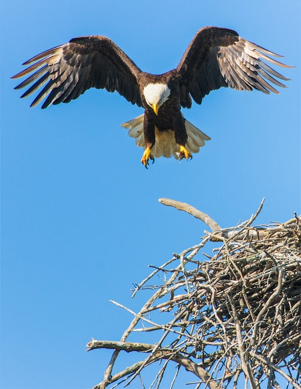
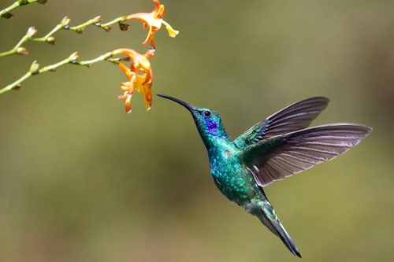
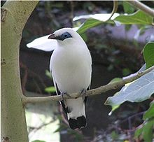
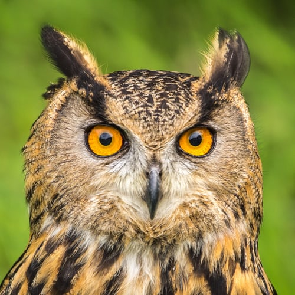
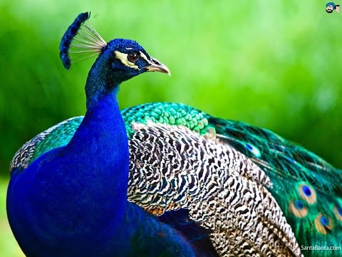
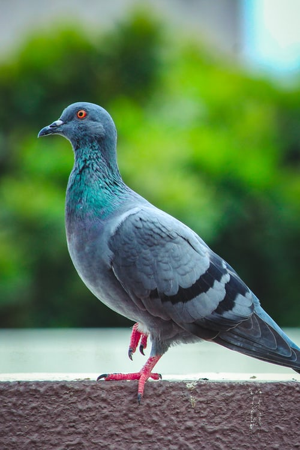
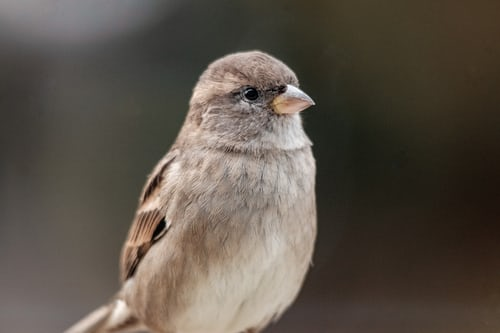
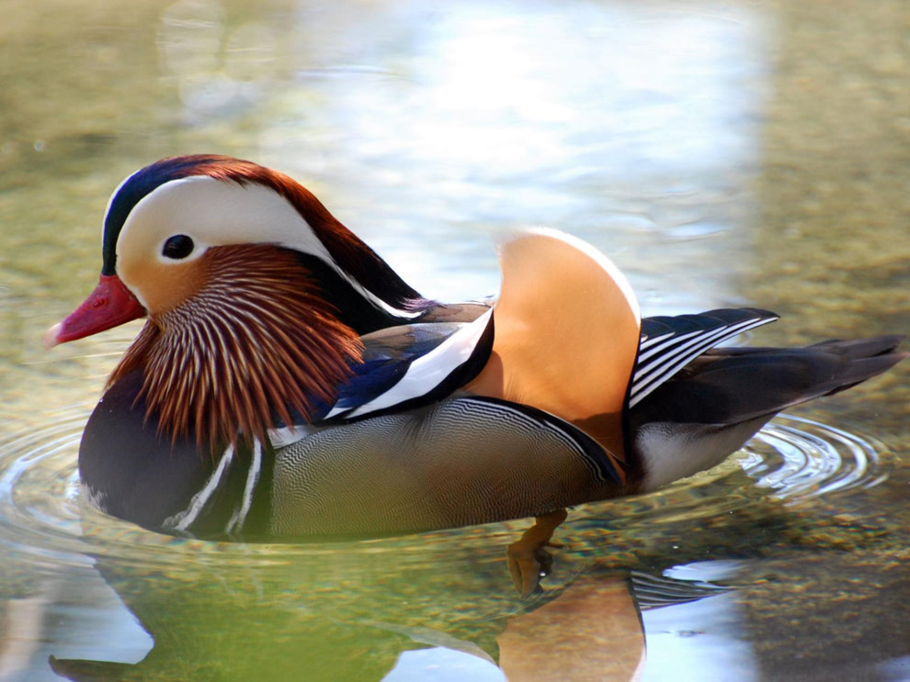

Lab Assignment 2
Magpie Robin

The Oriental magpie-robin is a small passerine bird that was formerly classed as a member of the thrush family Turdidae, but now considered an Old World flycatcher. They are distinctive black and white birds with a long tail that is held upright as they forage on the ground or perch conspicuously.
Eagle

Eagle is the common name for many large birds of prey of the family Accipitridae. Eagles belong to several groups of genera, some of which are closely related. Most of the 60 species of eagle are from Eurasia and Africa.
Hummingbirds

Hummingbirds are birds native to the Americas and constituting the biological family Trochilidae. They are the smallest of birds, most species measuring 7.5–13 cm in length. The smallest extant hummingbird species is the 5 cm bee hummingbird, which weighs less than 2.0 g.
Myna

The myna (/ˈmaɪnə/; also spelled mynah) is a bird of the starling family (Sturnidae). This is a group of passerine birds which are native to southern Asia, especially India, Pakistan and Bangladesh.
Owls

Owls are birds from the order Strigiformes, which includes over 200 species of mostly solitary and nocturnal birds of prey typified by an upright stance, a large, broad head, binocular vision, binaural hearing, sharp talons, and feathers adapted for silent flight.
Parrots

The Indian peafowl, also known as the common peafowl, and blue peafowl, is a peafowl species native to the Indian subcontinent. It has been introduced to many other countries
Peacock

Peacock, also called peafowl, any of three species of resplendent birds of the pheasant family, Phasianidae (order Galliformes). Strictly, the male is a peacock, and the female is a peahen; both are peafowl.The Indian peafowl, also known as the common peafowl, and blue peafowl, is a peafowl species native to the Indian subcontinent. It has been introduced to many other countries
Pigeon

Pigeon is a bird family consisting of pigeons and doves. It is the only family in the order Columbiformes. These are stout-bodied birds with short necks, and short slender bills that in some species feature fleshy ceres. They primarily feed on seeds, fruits, and plants.
House Sparrow

The house sparrow is a bird of the sparrow family Passeridae, found in most parts of the world. It is a small bird that has a typical length of 16 cm and a mass of 24–39.5 g. Females and young birds are coloured pale brown and grey, and males have brighter black, white, and brown markings.
waterfowl

Anseriformes is an order of birds that comprise about 180 living species in three families: Anhimidae, Anseranatidae, and Anatidae, the largest family, which includes over 170 species of waterfowl, among them the ducks, geese, and swans.